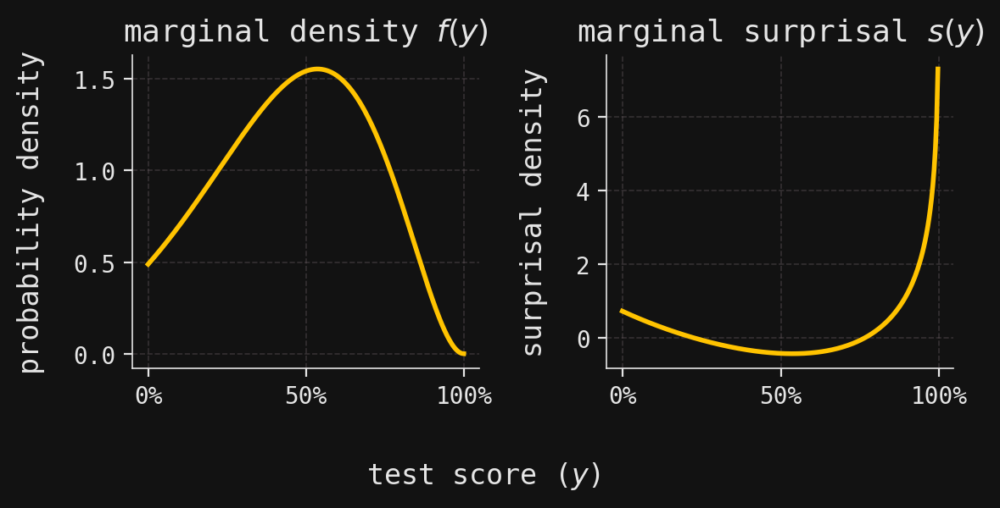
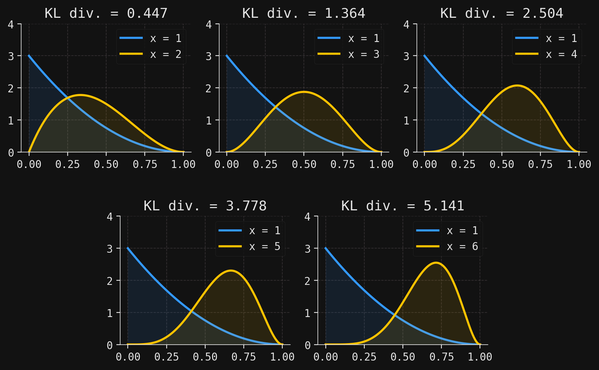
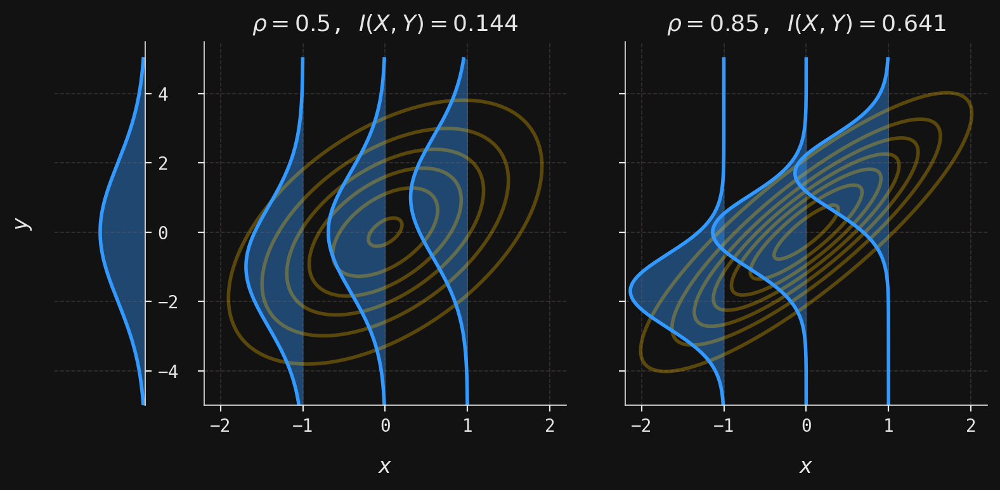

Large language models (LLMs) like ChatGPT have brought probabilistic models into mainstream conversation. Unlike deterministic models that always produce the same output for a given input, these models generate a probability distribution over many possible outputs. Information theory provides the mathematical framework for understanding these distributions, and how sensitive they are to the inputs of the model.
To understand this more concretely, consider what happens when you prompt an LLM. You might ask “What’s the capital of France?” and reliably get “Paris” as the answer. The model is highly confident: the output probability distribution is concentrated over the one-word output “Paris”. But if you ask “Write me a poem about autumn,” you’ll get a different response each time. Here, the probability distribution is spread across countless possible poems, each with some small probability of being generated. In the first case, the model is certain, reflected in the strongly peaked output distribution, while in the latter case it is uncertain, reflected in the highly dispersed output distribution. The input to the model (i.e., the prompt) thus has a strong effect on the certainty in the output distribution.
The gap between certainty and uncertainty lies at the heart of information theory. When Claude Shannon founded the field (see Shannon 1948), he was grappling with a fundamental question in telecommunications: how much data can you reliably transmit through a noisy communication channel? Telephone wires introduce random distortions like static and interference, scrambling the signal in unpredictable ways. Shannon realized he could model this mathematically using probability theory, and what began as a framework for analyzing communication over literal telephone wires evolved into an abstract mathematical theory with remarkably broad applications. Indeed, Shannon has been credited with laying the foundations for our modern information-based society.
Interestingly, Shannon’s notion of entropy has deep connections to the concept of entropy in statistical mechanics and thermodynamics. In 1957, E. T. Jaynes famously formalized this connection in his influential paper (Jaynes 1957), where he wrote:
“The mere fact that the same mathematical expression \(-\sum p_i \log{p_i}\) [for entropy] occurs both in statistical mechanics and in information theory does not in itself establish any connection between these fields. This can be done only by finding new viewpoints from which thermodynamic entropy and information-theory entropy appear as the same concept. In this paper we suggest a reinterpretation of statistical mechanics which accomplishes this, so that information theory can be applied to the problem of justification of statistical mechanics.”
Even my undergraduate thermodynamics textbook devoted an entire chapter to Shannon’s information theory, emphasizing how these mathematical ideas provide a unifying perspective across seemingly different domains.
We will begin by surveying the most basic quantities of information theory: surprisal, entropy, Kullback–Leibler (KL) divergence, and mutual information. Surprisal is a quantity attached to a random outcome that is inversely linked to its probability: a likely outcome is not surprising, while an unlikely one is highly surprising. When we average surprisal over all possible random outcomes, we obtain the entropy, which quantifies the overall uncertainty in a probability distribution. The KL divergence measures how one probability distribution differs from another, capturing the “distance” between them. Mutual information can be viewed as a special kind of KL divergence applied to two random variables, \(X\) and \(Y\): it measures how much observing \(X\) reduces the uncertainty (entropy) in \(Y\) on average. This last quantity connects directly to our discussion of LLMs: it captures precisely how much the input prompt narrows down the output distribution.
This post is the first in a series on information. In future posts, we will explore other ways the concept of information appears—for example, through \(\sigma\)-algebras—and apply these ideas to a range of problems, from gambling strategies and games of chance (the historical origin of mathematical probability theory), to options pricing in mathematical finance, and to probabilistic models in machine learning. I have discussed information theory previously in a chapter of my book; while some material overlaps with that chapter, this series also introduces many new perspectives and examples.
If you’d like to follow along with the code examples in this post, please see the dropdown code block below for the usual imports and setup.
Code
# Import probability distributions, integration, and plotting librariesfrom scipy.stats import norm, multivariate_normal, beta, poisson, binom, entropyfrom scipy.integrate import quadimport numpy as npimport matplotlib.pyplot as pltfrom matplotlib.colors import LinearSegmentedColormapfrom matplotlib.ticker import PercentFormatterimport matplotlib.gridspec as gridspec# Set custom matplotlib style (user must use their own style file)plt.style.use("../../aux-files/custom-theme.mplstyle")# Define color palette for plotsyellow ="#FFC300"blue ="#3399FF"purple ="#AA77CC"class RV:""" A class representing a random variable (discrete or continuous), with optional support for conditional densities. Attributes ---------- support : array-like or None The support of the random variable (e.g., possible values for discrete, grid for continuous). density : callable The marginal density or mass function. cond_density : callable or None The conditional density function, if provided. cond_support : array-like or None The support for the conditional variable, if applicable. density_array : np.ndarray or None The marginal density evaluated on the support, if support is array-like. _cond_density_array : dict or None Precomputed conditional densities, if available. """def__init__(self, support=None, density=None, cond_density=None, cond_support=None, ):""" Initialize an RV object. Parameters ---------- support : array-like or None The support of the random variable (e.g., possible values for discrete, grid for continuous). density : callable The marginal density or mass function. Should accept a value (or array of values) and return the density/mass. cond_density : callable, optional The conditional density function f(x|y). Should accept (x, y) and return the density of x given y. cond_support : array-like or None, optional The support for the conditional variable, if applicable. """self.support = supportself.density = densityself.cond_density = cond_densityself.cond_support = cond_support# Precompute the marginal density array if possibleif support isnotNoneand density isnotNone:self.density_array = np.array([density(x) for x in support])else:self.density_array =None# Precompute the conditional density array as a dictionary, if possibleif ( support isnotNoneand density isnotNoneand cond_density isnotNoneand cond_support isnotNone ):self._cond_density_array = { y: cond_density(support, y) for y in cond_support }else:self._cond_density_array =Nonedef pdf(self, x):""" Evaluate the marginal density or mass function at x. """returnself.density(x)def pmf(self, x):""" Alias for pdf, for discrete random variables. """returnself.pdf(x)def set_cond_density(self, cond_density):""" Set the conditional density function f(x|y). """self.cond_density = cond_densitydef cond_pdf(self, x, y):""" Evaluate the conditional density f(x|y). Raises a ValueError if the conditional density function is not set. """ifself.cond_density isNone:raiseValueError("Conditional density function not set.")returnself.cond_density(x, y)def cond_density_array(self, y):""" Get the conditional density array f(x|y) for a fixed y. Raises a ValueError if the conditional density array is not precomputed. """ifself._cond_density_array isNone:raiseValueError("Conditional density array not precomputed.")returnself._cond_density_array[y]
Flows of information
We begin by building a mathematical gadget—a kind of probabilistic framework—that models the “flow of information” between two random variables \(X\) and \(Y\) (or random vectors, or random objects, or …). Such flows are exactly what information theory calls communication channels, and they include many of the predictive probabilistic models in machine learning where information flows from input \(X\) to output \(Y\). Once these flows have been identified in this section, in the rest of the post we seek to understand how information flowing from \(X\) influences and shapes the distribution of \(Y\).
The simplest flow between \(X\) and \(Y\) is a functional one, expressed as an equation \[
g(X)=Y,
\tag{1}\]
where \(g\) is a function. With \(X\) as input and \(Y\) as output, each \(X=x\) produces a unique output \(y = g(x)\). Such flows underlie deterministic models. In the case that \(X\) and \(Y\) take values on the real line \(\mathbb{R}\), we might visualize the situation like this:
Note that each value of \(x\) along the input (left) axis determines a unique value of \(y\) along the output (right) axis.
On the other hand, we might suppose that information flows from \(X\) to \(Y\) in a stochastic fashion, in which \(X=x\) no longer determines a single \(y\), but instead induces a distribution over possible \(Y\) values. This is precisely what a conditional distribution \(P(Y= y\mid X=x)\) captures: given an observed value \(X=x\), we have a probability distribution on \(y\)’s. We can think of this as a function of the form
\[
x \mapsto P(Y= y \mid X=x),
\tag{2}\]
where \(y\) plays the role of a variable rather than a fixed quantity, so that \(P(Y= y \mid X=x)\) is a probability distribution and not just a single probability. So this function is rather special: its input is a value \(x\), while its output is an entire probability distribution. Mathematicians call such objects Markov kernels. A figure will make this more concrete: in contrast to the deterministic flows drawn above, in the case that \(X\) and \(Y\) take values on the real line \(\mathbb{R}\), we visualize a stochastic flow as follows, where each value of \(x\) is mapped to a probability distribution on \(y\)’s:
In our model of a stochastic flow, we therefore use conditional distributions, understood as functions on the conditioning variable.
In practice, we often model such flows with a family \(P(Y=y;\theta)\) of distributions parameterized by a vector \(\theta\). The stochastic flow from \(X\) to \(Y\) is then implemented as a function \(x\mapsto \theta(x)\) from observations of \(X\) to parameters \(\theta\), and the conditional distribution is then defined as
for some model coefficients \(\beta_0\) and \(\beta_1\). Concisely, the stochastic flow from \(X\) to \(Y\) in a linear regression model is completely described by specifying
We will return to an information-theoretic treatment of linear regression (and other) models in a later post.
For now, let’s see all this in action with real distributions in a real-world context. Suppose that \(X\) is the number of hours that a randomly chosen student studies for an upcoming exam, restricted to discrete values \(X = 1,2,3,4,5,6\). Let’s say that most students study only 2 or 3 hours, with its full distribution (mass function \(f(x)\)) shown below:
Code
# Compute the probability mass function for X (hours studied) using a Poisson distribution with mean 3fx_array = poisson.pmf(range(1, 7), mu=3)fx_array /= fx_array.sum() # Normalize so probabilities sum to 1# Define a function to look up the probability for a given value of Xfx =lambda x: fx_array[x -1]# Create an RV object for X, specifying its support and marginal mass functionX = RV(support=range(1, 7), density=fx)# Create a new matplotlib figure and axis with a specified size_, ax = plt.subplots(figsize=(6, 4))# Plot a bar chart of the probability mass function for Xax.bar(X.support, X.density_array, width=0.4, zorder=2)# Label the x-axis as "hours studied (x)"ax.set_xlabel(r"hours studied ($x$)")# Label the y-axis as "probability"ax.set_ylabel("probability")# Set the plot title to indicate this is the marginal mass function f(x)ax.set_title(r"marginal mass $f(x)$")# Set the x-axis ticks to match the possible values of Xax.set_xticks(X.support)# Adjust layout for better appearance and display the plotplt.tight_layout()plt.show()
We might reasonably believe that \(X\) is predictive of \(Y\), the exam score of a randomly chosen student, taking continuous values in the interval \([0,1]\), understood as percentages. The corresponding marginal density \(f(y)\) is shown below:
Code
# Define the conditional density function fy_given_x(y, x) as a Beta(x, 3) distributionfy_given_x =lambda y, x: beta.pdf(y, a=x, b=3)# Define the marginal density function fy(y) as a mixture over x, weighted by fx(x)fy =lambda y: sum([fy_given_x(y, x) * fx(x) for x inrange(1, 7)])# Create an RV object for Y, specifying its support, marginal density, and conditional densityY = RV( support=np.linspace(0, 1, num=250), # Grid of possible y values (test scores) density=fy, # Marginal density function for Y cond_density=fy_given_x, # Conditional density function fy_given_x(y, x) cond_support=range(1, 7), # Possible values of x (hours studied))# Create a new matplotlib figure and axis for plotting the marginal density of Y_, ax = plt.subplots(figsize=(6, 4))# Plot the marginal density fy(y) over the grid of y valuesax.plot(Y.support, Y.density_array)# Shade the area under the density curve for visual emphasisax.fill_between(Y.support, Y.density_array, zorder=2, alpha=0.1)# Format the x-axis labels as percentages (since y is a proportion)ax.xaxis.set_major_formatter(PercentFormatter(xmax=1))# Set the plot title and axis labelsax.set_title(r"marginal density $f(y)$")ax.set_xlabel("test score ($y$)")ax.set_ylabel("probability density")# Adjust layout for better appearance and display the plotplt.tight_layout()plt.show()
Together, \(X\) and \(Y\) have a joint mass/density function \(f(x,y)\), visualized in the following ridgeline plot, where each of the horizontal density curves shows \(f(x,y)\) as a function of \(y\), for fixed\(x=1,2,3,4,5,6\).
Code
# Create a new matplotlib figure and axis with a specified size_, ax = plt.subplots(figsize=(6, 5))# Create a custom colormap for conditional distributionsconditional_stops = [blue, purple, yellow]conditional_cmap = LinearSegmentedColormap.from_list("conditional_cmap", conditional_stops)# Generate a list of colors for each value of x using the custom colormapconditional_colors = [conditional_cmap(i /5) for i inrange(6)]# Loop over each possible value of xfor x in X.support:# Compute the joint density values for each x, scaled for visualization# This is f(y|x) * f(x), scaled for the ridgeline effect joint_vals =1.7* Y.cond_density_array(x) * X.pdf(x)# Fill the area between the baseline (x) and the curve (x + joint_vals) for ridgeline effect ax.fill_between( Y.support, x, x + joint_vals, color=conditional_colors[x -1], zorder=2, alpha=0.1, )# Plot the top edge of the density curve for each x ax.plot(Y.support, x + joint_vals, color=conditional_colors[x -1], zorder=2)# Label the y-axis as "hours studied (x)"ax.set_ylabel(r"hours studied ($x$)")# Label the x-axis as "test score (y)"ax.set_xlabel(r"test score ($y$)")# Format the x-axis labels as percentagesax.xaxis.set_major_formatter(PercentFormatter(xmax=1))# Set the plot title to indicate this is the joint mass/density f(x, y)ax.set_title(r"joint mass/density $f(x,y)$")# Adjust layout for better appearance and display the plotplt.tight_layout()plt.show()
Dividing the joint mass/density \(f(x,y)\) by the marginal mass \(f(x)\) yields the conditional densities \(f(y|x)\). These are just the same density curves in the ridgeline plot above, normalized so that they integrate to \(1\) over \([0,1]\). They are shown in:
Code
# Create a new matplotlib figure and axis with a specified size_, ax = plt.subplots(figsize=(6, 4))# Loop over each possible value of x (hours studied)for x in X.support:# Plot the conditional density f(y|x) for each x as a Beta(x, 3) distribution ax.plot( Y.support, Y.cond_density_array(x), color=conditional_colors[x -1], label=x )# Add a legend indicating the value of x for each curveax.legend(title=r"hours studied ($x$)", loc="center left", bbox_to_anchor=(1, 0.5))# Format the x-axis labels as percentages (since y is a proportion)ax.xaxis.set_major_formatter(PercentFormatter(xmax=1))# Set the plot title to indicate these are conditional densities f(y|x)ax.set_title(r"conditional densities $f(y|x)$")# Label the axesax.set_xlabel(r"test score ($y$)")ax.set_ylabel("probability density")# Adjust layout for better appearance and display the plotplt.tight_layout()plt.show()
In our information-theoretic terminology, the conditional density
\[
x\mapsto f(y|x),
\]
thought of as a function of \(x\), models the stochastic flow of information from \(X\) to \(Y\).
The marginal density \(f(y)\) shows moderate uncertainty—it’s somewhat peaked, but not sharply. An exam score randomly drawn from \(Y\) will be mildly uncertain, mildly surprising. The exact amount of uncertainty in \(Y\) will be measured through its entropy, denoted \(H(Y)\), introduced in the next section. In contrast, the conditional densities \(f(y|x)\) exhibit less uncertainty compared to the marginal, especially for values of \(x\) closer to \(6\). The uncertainty remaining in \(Y\) after observing \(X=x\) is measured by the conditional entropy, denoted \(H(Y\mid X=x)\). Averaging this conditional entropy over \(X\) yields the quantity
the average amount of uncertainty in \(Y\), given \(X\). Then, it is a general observation that
\[
H(Y) \geq H(Y\mid X)
\]
for any pair of random variables \(X\) and \(Y\), reflecting the obvious fact that no additional information will ever increase the uncertainty in \(Y\). Thus, the quantity
is a nonnegative proxy for the amount of information transmitted from \(X\) to \(Y\): if it is large, then the gap between \(H(Y)\) and \(H(Y\mid X)\) is wide, indicating that observations of \(X\) greatly reduce the uncertainty in \(Y\). We understand this as a “large amount of information” is transmitted from \(X\) to \(Y\). Conversely, when \(I(X,Y)\) is small, observations of \(X\) reveal little about \(Y\); in the extreme case \(I(X,Y)=0\), the two are independent. The quantity \(I(X,Y)\) is exactly the mutual information between \(X\) and \(Y\), introduced in the next section.
Surprisal and entropy
As mentioned in the introduction, entropy measures the uncertainty in the outcome of a random variable. More precisely, it is the average surprisal of an observation. Surprisal varies inversely with probability: large probabilities yield small surprisals, and small probabilities yield large ones.
This inverse relationship is given by the function \(s = -\log{p}\), linking a probability \(p\in [0,1]\) with a surprisal\(s\in [0,\infty)\). The graph of this relationship is shown in:
We write \(\log\) for the base-\(e\) logarithm.
Code
# Create a grid of probability values from 0.01 to 1 (avoiding 0 to prevent log(0))mesh = np.linspace(0.01, 1, num=100)# Create a new matplotlib figure and axis with a specified size_, ax = plt.subplots(figsize=(4, 3))# Plot the surprisal function s = -log(p) as a function of probability pax.plot(mesh, -np.log(mesh), color=yellow)# Label the x-axis as probability (p)ax.set_xlabel(r"probability ($p$)")# Label the y-axis as surprisal (s)ax.set_ylabel(r"surprisal ($s$)")# Adjust layout for better appearance and display the plotplt.tight_layout()plt.show()
At first glance, many functions might seem equally capable of expressing this inverse relationship between probability and surprisal—so why the choice of base-\(e\) logarithm? It turns out that if one starts from a few natural axioms that any reasonable notion of surprisal should satisfy, then you can prove all such surprisal functions must be proportional to negative logarithms (see, for example, the discussion in Section 9 in Rioul 2021). The choice of base \(e\) is then somewhat arbitrary, akin to choosing units. Another popular choice is base \(2\), which aligns naturally with bit strings in coding theory. In base \(e\), information content is measured in so-called natural units, or nats; in base \(2\), it is measured in binary units, or bits. (See Section 10 in the aforementioned reference Rioul 2021 for more on units.)
This link between surprisals and probabilities may be extended to a link between surprisal and probability densities in the case that the probabilities are continuous. Since it is inconvenient to continually distinguish between mass and density functions in all definitions and theorems, we will follow the convention in measure-theoretic probability theory and refer to all probability mass and density functions as densities and denote them all by \(f\). In this scheme, a probability mass function really is a density function relative to the counting measure.
With this convention in mind, the following definition applies to both discrete and continuous random variables:
Definition 1 Let \(X\) and \(Y\) be two random variables with density functions \(f(x)\) and \(f(y)\), respectively.
The surprisal of an observed value \(X=x\) is the quantity \[
s(x) = -\log{f(x)}.
\]
The conditional surprisal of an observed value \(Y=y\), given \(X=x\), is the quantity \[
s(y|x) = -\log{f(y|x)},
\] where \(f(y|x)\) is the conditional density of \(Y\) given \(X\).
For a simple example of the relationship between discrete probabilities and surprisals, let’s bring back our random variable \(X\) from the previous section, which tallied the number of hours a randomly chosen student studied for the upcoming exam:
Code
# Create a figure with two subplots side by sidefig, axes = plt.subplots(ncols=2, figsize=(6, 3))# Plot the marginal probability mass function f(x) as a bar chart on the first subplotaxes[0].bar(X.support, X.density_array, width=0.4, zorder=2)axes[0].set_ylabel(r"probability mass") # Label y-axisaxes[0].set_title(r"marginal density $f(x)$") # Set subplot titleaxes[0].set_xticks(X.support) # Set x-ticks to match possible values of x# Plot the marginal surprisal s(x) = -log(f(x)) as a bar chart on the second subplotaxes[1].bar(X.support, -np.log(X.density_array), width=0.4, zorder=2)axes[1].set_ylabel(r"surprisal mass") # Label y-axisaxes[1].set_title(r"marginal surprisal $s(x)$") # Set subplot titleaxes[1].set_xticks(X.support) # Set x-ticks to match possible values of x# Add a shared x-axis label for both subplotsfig.supxlabel(r"hours studied ($x$)")# Adjust layout for better appearance and display the plotplt.tight_layout()plt.show()
Because a probability density (mass) function of a discrete random variable must take values in \([0,1]\), its surprisal function is never negative. However, the probability density function of a continuous random variable may take on values larger than \(1\), which means that the associated surprisal density function can be negative. This can be seen for the continuous random variable \(Y\) from the previous section, whose density can exceed \(1\) in regions of high concentration—hence its surprisal can dip below zero.
Code
# Create a figure with two subplots side by sidefig, axes = plt.subplots(ncols=2, figsize=(6, 3))# Plot the marginal probability density function f(y) on the first subplotaxes[0].plot(Y.support, Y.density_array)axes[0].xaxis.set_major_formatter( PercentFormatter(xmax=1)) # Format x-axis as percentagesaxes[0].set_title(r"marginal density $f(y)$") # Set subplot titleaxes[0].set_ylabel("probability density") # Label y-axis# Plot the marginal surprisal s(y) = -log(f(y)) on the second subplotaxes[1].plot(Y.support[:-1], -np.log(Y.density_array[:-1]))axes[1].xaxis.set_major_formatter( PercentFormatter(xmax=1)) # Format x-axis as percentagesaxes[1].set_title(r"marginal surprisal $s(y)$") # Set subplot titleaxes[1].set_ylabel("surprisal density") # Label y-axis# Add a shared x-axis label for both subplotsfig.supxlabel("test score ($y$)")# Adjust layout for better appearance and display the plotplt.tight_layout()plt.show()

Having defined surprisal for individual outcomes, entropy emerges naturally as its average—capturing the typical “surprise” we can expect.
Definition 2 Let \(X\) and \(Y\) be two random variables with density functions \(f(x)\) and \(f(y)\), respectively.
The entropy of \(X\) is the quantity \[
H(X) = E_{x\sim f(x)}(s(x)).
\]
The conditional entropy of \(Y\), given an observed value \(X=x\), is the quantity \[
H(Y\mid X=x) = E_{y\sim f(y|x)}(s(y\mid x)),
\] where \(f(y|x)\) is the conditional density of \(Y\) given \(X\).
The conditional entropy of \(Y\), given \(X\), is the quantity
\[
H(Y\mid X) = E_{x\sim f(x)}(H(Y\mid X=x)).
\]
In the case that \(X\) is discrete, then the entropy \(H(X)\) is a sum of either a finite or countably infinite number of terms:
where, by convention, \(\int\) denotes integration over \(\mathbb{R}\). In the literature, the entropy of a continuous random variable is often called differential entropy.
The stats submodule of the SciPy library contains a convenient method called entropy for computing entropies of discrete random variables. We use it to compute the entropy \(H(X)\), where \(X\) is the “hours studied” random variable:
print(f"The probability mass function f(x) of X is:\n")for x in X.support:# Print the probability mass for each possible value of X (1 through n)print(f" f({x}) =", round(X.pdf(x), 3))# Compute and print the entropy H(X) using scipy's entropy functionprint(f"\nThe entropy H(X) is {entropy(X.density_array):.3f}.")
The probability mass function f(x) of X is:
f(1) = 0.163
f(2) = 0.244
f(3) = 0.244
f(4) = 0.183
f(5) = 0.11
f(6) = 0.055
The entropy H(X) is 1.698.
We can use the quad method in the integrate submodule of SciPy to compute differential entropies. For the “exam score” random variable \(Y\), we compute:
# Compute the differential entropy H(Y) by integrating -f(y) * log(f(y)) over [0, 1]diff_entropy, _ = quad(func=lambda y: -Y.pdf(y) * np.log(Y.pdf(y)), a=0, b=1)# Print the computed differential entropy valueprint(f"The differential entropy H(Y) is {diff_entropy:.3f}.")
The differential entropy H(Y) is -0.131.
Notice that \(H(Y)\) turns out to be negative—a reminder that differential entropy behaves quite differently from its discrete cousin.
Kullback–Leibler divergence and mutual information
In this section, we develop an information-theoretic way to measure how “far apart” two probability distributions are. By way of motivation, we consider two probability measures on a single finite probability space \(\Omega\), so that the two measures have mass functions \(f(\omega)\) and \(g(\omega)\). The metric we’ll use is the mean logarithmic relative magnitude, a measure that captures not the absolute difference between probabilities, but how one probability scales relative to another. To define it, we first define the absolute relative magnitude of the probability \(f(\omega)\) to the probability \(g(\omega)\) as the ratio \(f(\omega)/g(\omega)\). Then, logarithmic relative magnitude refers to the base-\(e\) logarithm of the absolute relative magnitude:
Intuitively, this logarithm tells us the “order of magnitude” difference between \(f(\omega)\) and \(g(\omega)\). If \(f(\omega)\approx e^k\) and \(g(\omega)\approx e^l\), then the log ratio is roughly \(k-l\).
Perhaps the most obvious immediate benefit of introducing the logarithm is that it yields a workable number when \(f(\omega)\) and \(g(\omega)\) each have widely different magnitudes. For example, let’s suppose that the mass functions \(f(\omega)\) and \(g(\omega)\) are given by
for \(\omega\in \{0,1,\ldots,10\}\). These are the mass functions of a \(\mathcal{B}in(10,0.4)\) and \(\mathcal{B}in(10,0.9)\) random variable, respectively. We then plot histograms for these mass functions, along with histograms of the absolute and logarithmic relative magnitudes:
Code
# Define the possible values of omega (0 through 10)omegas = np.arange(0, 11)# Compute the probability mass functions for two Binomial distributions:# p: Binomial(n=10, p=0.4)# q: Binomial(n=10, p=0.9)p = binom(n=10, p=0.4).pmf(omegas)q = binom(n=10, p=0.9).pmf(omegas)# Titles for each subplottitles = ["$f(\\omega)$", # PMF of first distribution"$g(\\omega)$", # PMF of second distribution"$\\frac{f(\\omega)}{g(\\omega)}$", # Ratio of PMFs"$\\log\\left(\\frac{f(\\omega)}{g(\\omega)}\\right)$", # Log-ratio of PMFs]# Data to plot in each subplotprobs = [p, q, p / q, np.log(p / q)]# Y-axis limits for each subplot for better visualizationylims = [(0, 0.4), (0, 0.4), (-50, 0.75e8), (-10, 20)]# Create a 2x2 grid of subplotsfig, axes = plt.subplots(ncols=2, nrows=2, figsize=(8, 5), sharex=True)# Loop over each subplot, plotting the corresponding datafor title, prob, ylim, axis inzip(titles, probs, ylims, axes.flatten()): axis.bar(omegas, prob, width=0.4, zorder=2) # Bar plot for each omega axis.set_xticks(ticks=omegas) # Set x-ticks to omega values axis.set_ylim(ylim) # Set y-axis limits axis.set_title(title) # Set subplot title# Add a shared x-axis label for all subplotsfig.supxlabel("$\\omega$")# Adjust layout for better appearance and spacingplt.tight_layout()plt.subplots_adjust(hspace=0.5)plt.show()
The second row makes the point vividly: the absolute relative magnitudes span such wildly different scales that the plot is almost useless, and numerical computations would be unstable. The logarithmic version, by contrast, stays well-behaved and informative.
We obtain a single-number summary of the logarithmic relative magnitudes by taking their mean with respect to the mass function \(f(\omega)\), giving us the number
where the right-hand side is the negative of a number of the form (3). So, at least up to sign, it doesn’t really matter which of the two numbers (3) or (4) that we use to develop our theory. Our choice of (3) has the benefit of making the KL divergence nonnegative when the distributions are discrete.
These considerations lead us to:
Definition 3 Let \(X\) and \(Y\) be two random variables with density functions \(f(x)\) and \(g(x)\), respectively. The Kullback–Leibler divergence (or just KL divergence) from \(X\) to \(Y\), denoted \(D(X \parallel Y)\), is the mean logarithmic relative magnitude:
Technically, \(D(X\parallel Y)\) is defined only when \(f(x)=0\) implies \(g(x)=0\) for all \(x\)—a condition known as absolute continuity in measure theory. If \(X\) and \(Y\) are continuous, then \(D(X\parallel Y)\) is often called the differential KL divergence.
For some examples of differential KL divergences, let’s consider the conditional random variables \(Y\mid X=x\) from the previous section, which give the exam score \(Y\) of a randomly chosen student if they had studied \(X=x\) hours (for \(x=1,2,\ldots,6\)). In the figure below, we plot the densities \(f(y\mid x)\) of the conditional distributions and compute the five differential KL divergences
# Define the integrand for KL divergence between two Beta distributions:def integrand(y, x1, x2):return Y.cond_pdf(y, x1) * np.log(Y.cond_pdf(y, x1) / Y.cond_pdf(y, x2))# Compute KL divergence D((Y|X=1) || (Y|X=x)) for x = 2, 3, 4, 5, 6KL_div = {x: quad(func=integrand, args=(1, x), a=0, b=1)[0] for x in X.support[1:]}# Set up a 2x6 grid for custom subplot arrangementfig = plt.figure(figsize=(8, 5))gs = gridspec.GridSpec(2, 6, figure=fig)ax1 = fig.add_subplot(gs[0, 0:2])ax2 = fig.add_subplot(gs[0, 2:4])ax3 = fig.add_subplot(gs[0, 4:6])ax4 = fig.add_subplot(gs[1, 1:3])ax5 = fig.add_subplot(gs[1, 3:5])axes = [ax1, ax2, ax3, ax4, ax5]# For each subplot, plot the two conditional densities and annotate with KL divergencefor x, ax inzip(X.support[1:], axes):# Plot f(y|x=1) in blue ax.plot(Y.support, Y.cond_density_array(1), color=blue, zorder=2, label="x = 1") ax.fill_between(Y.support, Y.cond_density_array(1), zorder=2, color=blue, alpha=0.1)# Plot f(y|x) in yellow ax.plot( Y.support, Y.cond_density_array(x), color=yellow, zorder=2, label=f"x = {x}" ) ax.fill_between( Y.support, Y.cond_density_array(x), zorder=2, color=yellow, alpha=0.1 )# Annotate with the computed KL divergence ax.set_title(f"KL div. = {KL_div[x]:.3f}") ax.set_ylim(0, 4) ax.legend(loc="upper right")# Adjust layout and spacing for better appearanceplt.tight_layout()plt.subplots_adjust(hspace=0.5)plt.show()

Each subplot contains the blue density curve \(f(y\mid x=1)\), along with a yellow density curve \(f(y\mid x)\) for \(x=2,3,4,5,6\). As \(x\) gets larger, we can see visually that the densities become more unalike; this increasing dissimilarity is reflected in larger KL divergences as \(x\) gets larger.
At the other end of the spectrum, we have \(D(X \parallel Y) = 0\) when \(X\) and \(Y\) are identically distributed. And, at least when the variables are discrete, it is a basic but important fact that we always have \(D(X \parallel Y)\geq 0\), with equality if and only if \(X\) and \(Y\) are identically distributed; this is referred to as Gibbs’ inequality (see here for a proof). So, the KL divergence has several properties that make it a good measure for the “distance” between two probability distributions. However, note that this distance is not symmetric, in the sense that we have
\[
D(X\parallel Y) \neq D(Y \parallel X)
\]
in general.
KL divergence measures how one distribution differs from another. To study relationships between random variables, we apply it to their joint and marginal distributions. If \(X\) and \(Y\) are independent, their joint density factors as the product of their marginals, \(f(x,y)=f(x)f(y)\). Thus, a measure of the “information flow” between \(X\) and \(Y\) is the distance—in the sense of KL divergence—from the true joint density \(f(x,y)\) to the product densities \(f(x)f(y)\). This leads us to:
Definition 4 Let \(X\) and \(Y\) be two random variables with density functions \(f(x)\) and \(f(y)\). The mutual information shared between \(X\) and \(Y\), denoted \(I(X,Y)\), is the quantity
The product \(f(x)f(y)\) is the density of some probability distribution on \(\mathbb{R}^2\), which would coincide with the true joint probability distribution (with density \(f(x,y)\)) if the variables were independent. So, the mutual information is the KL divergence between two probability distributions on \(\mathbb{R}^2\), and we have \(I(X,Y)=0\) when \(X\) and \(Y\) are independent.
As an example, we return once more to our random variables \(X\) and \(Y\), the “hours studied” discrete variable and the “exam score” continuous variable. In this case, the joint distribution of \(X\) and \(Y\) is a mixed discrete-continuous one, so the formula (5) gives
where \(f(x,y)\) is the true joint mass-density function and \(f(x)\) and \(f(y)\) are the marginal mass and densities, respectively. We implement this formula directly in Python, using the quad method in the integrate submodule of SciPy for integration:
# Compute the true joint density f(x, y) = f(x) * f(y|x)def fxy(x, y):return X.pdf(x) * Y.cond_pdf(y, x)# Define the integrand for mutual information:# f(x, y) * log(f(x, y) / (f(x) * f(y)))def integrand(x, y):return fxy(x, y) * np.log(fxy(x, y) / (X.pdf(x) * Y.pdf(y)))# For each x, create a function of y for integration over y in [0, 1]funcs = [lambda y, x=x: integrand(x, y) for x inrange(1, 7)]# Compute the mutual information by summing the integrals over y for each xmutual_info =sum([quad(func, a=0, b=1)[0] for func in funcs])# Print the computed mutual information I(X, Y)print(f"The mutual information I(X,Y) is {mutual_info:.3f}.")
The mutual information I(X,Y) is 0.201.
Using the definitions of marginal and conditional entropies given in Definition 2, one easily proves that the mutual information \(I(X,Y)\) may be computed as described in:
Theorem 1 (Mututal information is entropy) Let \(X\) and \(Y\) be two random variables. Then
\[
I(X,Y) = H(Y) - H(Y\mid X).
\tag{6}\]
Thus, the mutual information measures the amount of entropy in \(Y\) that is “leftover” after having observed \(X\). In other words, it quantifies how much knowing \(X\) reduces uncertainty about \(Y\).
We end this section by using formula (6) to re-do our computation of the mutual information \(I(X,Y)\) from above. We get the same answer:
# the differential entropy H(Y) is stored in `diff_entropy`# For each x, define a function of y for the conditional entropy integrand: -f(y|x) * log(f(y|x))funcs = [lambda y, x=x: -Y.cond_pdf(y, x) * np.log(Y.cond_pdf(y, x)) for x in X.support]# Compute the conditional entropy H(Y|X=x) for each x by integrating over y in [0, 1]cond_entropies = [quad(func, a=0, b=1)[0] for func in funcs]# Compute H(Y) - sum_x f(x) * H(Y|X=x), which equals the mutual information I(X, Y)diff_entropy -sum([cond_entropies[x -1] * X.pdf(x) for x in X.support])# Print the previously computed mutual information for comparisonprint(f"The mutual information I(X,Y) is {mutual_info:.3f}.")
The mutual information I(X,Y) is 0.201.
Mutual information of jointly normal random variables
Useful intuition for the mutual information \(I(X,Y)\) arises from the simple case of jointly normal variables, where a closed-form expression can be obtained. As a first step toward this formula, we compute the differential entropy of a single normal random variable:
For background on normal random vectors, see here.
Theorem 2 (Entropy of a normal random variable) If \(X\sim \mathcal{N}(\mu,\sigma^2)\), then
\[
H(X) = \frac{1}{2}\log(2\pi e \sigma^2),
\]
where \(e\) is the base of the natural logarithm.
NoteProof.
Letting \(f(x)\) be the density of \(X\), we compute:
where we’ve used \(\int f(x) \ dx =1\) and \(\int f(x)(x-\mu)^2 \ dx = \sigma^2\).
It is well known that the conditional distributions of a normal random vector are themselves normal; we include here the result for a \(2\)-dimensional normal random vector. The proof follows directly from standard properties of multivariate normal distributions and is omitted for brevity.
Theorem 3 (Conditional distributions of normal vectors are normal) Let \((X,Y) \sim \mathcal{N}_2(\boldsymbol{\mu}, \boldsymbol{\Sigma})\) be a \(2\)-dimensional normal random vector with
The next result contains the formula for the mutual information of two jointly normal random variables; its proof is an easy application of our previous results. Notice the mutual information only depends on the correlation between the variables, as intuition might suggest.
Theorem 4 (Mutual information of jointly normal variables) Let \((X,Y) \sim \mathcal{N}_2(\boldsymbol{\mu}, \boldsymbol{\Sigma})\) be a \(2\)-dimensional normal random vector. Then
Hence, the larger the correlation between the marginal normals, the larger the mutual information. To see this in action with a concrete example, let’s suppose that we have \((X,Y) \sim \mathcal{N}_2(\boldsymbol{\mu}, \boldsymbol{\Sigma})\), where
and \(\rho\) is the correlation of \(X\) and \(Y\) (hence the marginal standard deviations are \(\sigma_X = 1\) and \(\sigma_Y=2\)). In the second and third plots below, we have selected two correlations \(\rho=0.5,0.85\) and computed the corresponding mutual information \(I(X,Y)\). The isoprobability contours of the joint normal density \(f(x,y)\) are shown in yellow, while the conditional normal densities \(f(y|x)\) are shown in blue for each of \(x=-1, 0, 1\). For comparison, the marginal density \(f(y)\) has been shown in the first plot.
Code
# Define a function to plot contours of a bivariate normal distributiondef plot_multivar_norm(ax, muX, muY, sigmaX, sigmaY, x, y, labels=False):# Construct the covariance matrix using the specified correlation rho Sigma = np.array( [[sigmaX**2, rho * sigmaX * sigmaY], [rho * sigmaX * sigmaY, sigmaY**2]] ) Mu = np.array([muX, muY]) # Mean vector U = multivariate_normal(mean=Mu, cov=Sigma) # Multivariate normal object grid = np.dstack((x, y)) # Create a grid for evaluation z = U.pdf(grid) # Evaluate the PDF on the grid contour = ax.contour(x, y, z, colors=yellow, alpha=0.3) # Plot contoursif labels: ax.clabel(contour, inline=True, fontsize=8) # Optionally label contours# Define a function to plot the conditional density f(y|x) for a given x_obsdef plot_conditional( ax, muX, muY, sigmaX, sigmaY, rho, y_mesh, x_obs, magnification_factor=1):# Compute conditional mean and standard deviation for Y|X=x_obs mu = muY + (x_obs - muX) * rho * sigmaY / sigmaX sigma = sigmaY * np.sqrt(1- rho**2)# Compute and scale the conditional normal density x = magnification_factor * norm(loc=mu, scale=sigma).pdf(y_mesh)# Plot the conditional density horizontally, shifted to align with x_obs ax.plot(-x + x_obs, y_mesh, color=blue) ax.fill_betweenx(y_mesh, -x + x_obs, x_obs, color=blue, alpha=0.4)# Set parameters for the bivariate normal distributionmuX =0muY =0sigmaX =1sigmaY =2rhos = [0.5, 0.85] # Correlation values to illustratex_obs = [-1, 0, 1] # Observed x values for conditional plotsx, y = np.mgrid[-2.1:2.1:0.01, -5:5:0.01] # Grid for contour ploty_mesh = np.linspace(-5, 5, num=250) # Grid for conditional densities# Create a figure with three subplots: one for the marginal, two for different correlationsfig, axes = plt.subplots( ncols=3, figsize=(8, 4), sharey=True, gridspec_kw={"width_ratios": [1, 4, 4]})# Plot the marginal density of Y on the first subplot (as a horizontal density)magnification_factor =2.5x_marginal = magnification_factor * norm(scale=sigmaY).pdf(y_mesh)axes[0].plot(-x_marginal, y_mesh, color=blue)axes[0].set_xlim(-1, 0)axes[0].fill_betweenx(y_mesh, -x_marginal, 0, color=blue, alpha=0.4)axes[0].yaxis.tick_right()axes[0].spines["left"].set_visible(False)axes[0].spines["right"].set_visible(True)axes[0].spines["bottom"].set_visible(False)axes[0].set_xticks([])# For each correlation value, plot the joint contours and conditional densitiesfor rho, ax inzip(rhos, axes[1:]): plot_multivar_norm(ax, muX, muY, sigmaX, sigmaY, x, y)for x_ob in x_obs: plot_conditional( ax, muX, muY, sigmaX, sigmaY, rho, y_mesh, x_obs=x_ob, magnification_factor=3, )# Compute and display the mutual information for this correlation info =-(1/2) * np.log(1- rho**2) ax.set_title(rf"$\rho ={rho}$, $I(X,Y)= {info:0.3f}$") ax.set_xlabel(r"$x$") ax.set_xlim(-2.2, 2.2) ax.set_xticks(range(-2, 3))# Label the y-axis on the first subplotaxes[0].set_ylabel(r"$y$")plt.tight_layout()plt.show()

Compared to the marginal distribution of \(Y\), the conditional distributions become increasingly concentrated as \(\rho\) increases. This stronger concentration reflects the reduced uncertainty in \(Y\) when \(X\) is observed. This example illustrates the intuition behind mutual information: greater correlation implies stronger dependence, smaller conditional entropy, and thus higher mutual information.
Conclusion
We began by examining how information flows between random variables, distinguishing deterministic flows (where input uniquely determines output) from stochastic flows (where input induces a probability distribution over outputs). This distinction captures the fundamental difference between classical predictive models and modern probabilistic ones like large language models.
To quantify information and uncertainty, we introduced the core concepts of information theory: surprisal, entropy, KL divergence, and mutual information. Surprisal measures how unexpected an outcome is, inversely related to its probability through the logarithm. Entropy emerges as the average surprisal—capturing the overall uncertainty in a probability distribution. For our exam score example, we computed \(H(X) \approx 1.698\) for hours studied and \(H(Y) \approx -0.131\) for exam scores, illustrating how differential entropy can be negative for continuous variables.
The KL divergence \(D(X \parallel Y)\) quantifies how one distribution differs from another by measuring the mean logarithmic relative magnitude between their densities. While not a true metric (it’s asymmetric), it provides a principled way to measure distributional distance. This led naturally to mutual information \(I(X,Y)\), which applies KL divergence to the joint and marginal distributions, measuring how much knowing one variable reduces uncertainty about the other.
The relationship \(I(X,Y) = H(Y) - H(Y \mid X)\) reveals mutual information as the reduction in entropy: the gap between uncertainty before and after observing additional information. For our student example, we found \(I(X,Y) \approx 0.201\), indicating that knowing study hours provides modest but measurable information about exam performance. In the jointly normal case, we obtained the elegant formula \(I(X,Y) = -\frac{1}{2}\log(1-\rho^2)\), showing mutual information depends only on correlation.
These information-theoretic quantities provide a unified mathematical framework for understanding uncertainty, dependence, and information flow in probabilistic systems. In future posts, we’ll extend these ideas through the lens of \(\sigma\)-algebras and apply them to gambling strategies, options pricing in mathematical finance, and the analysis of probabilistic models in machine learning. The concepts developed here—viewing information as reduction in entropy—will prove essential for understanding learning over time and decision-making under uncertainty.
Bibliography
Jaynes, E. T. 1957. “Information Theory and Statistical Mechanics.”The Physical Review 106 (4): 620–30.
Rioul, O. 2021. “This Is IT: A Primer on Shannon’s Entropy and Information.” In Information Theory: Poincaré Seminar 2018, 49–86. Springer.
Shannon, C. E. 1948. “A Mathematical Theory of Communication.”The Bell System Technical Journal 27 (3): 379–423.